AutoPixel Studio 시각 기능 가이드
초경량 간편 모드부터 정밀 스튜디오 모드까지, 실제 툴 화면과 UI 크롭 이미지를 통해 각 기능의 동작 원리와 실무 활용법을 직관적으로 안내합니다.
초경량 '간편 모드' (간단 설정 안내)
복잡한 타임라인이나 난해한 설정 없이, 누구나 즉시 시작할 수 있는 미니멀 윈도우 조작 환경입니다.

정밀 스튜디오 (고급 모드) 인터페이스 구조
상단 2단 마스터 툴바, 좌측 템플릿 매니저, 중앙 3대 타임라인 뷰, 우측 상세 인스펙터로 정돈된 전문 작업 공간 구조입니다.

상단 제어 바 (프로젝트 관리 및 창 바인딩)
실제 툴 상단의 각 제어 버튼 영역을 크롭하여 실제 모양과 기능을 1:1로 매칭했습니다.
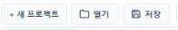
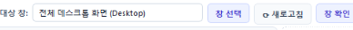
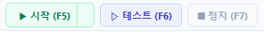
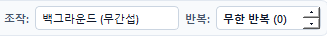
해상도 동기화 & 최적 크기 복원
창 크기가 변경되면 캡처 픽셀 배율이 달라져 인식률이 저하됩니다. 창 크기를 항상 100% 동일하게 유지해 주는 핵심 바입니다.
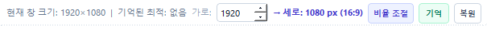
- 기억: 템플릿 이미지를 최초 캡처할 당시의 완벽한 가로x세로 해상도를 메타데이터에 스냅샷으로 저장합니다.
- 복원: 사용자가 창 크기를 임의로 드래그하여 흐트러뜨려도, [복원] 클릭 한 번으로 기준 크기로 강제 원상 복구합니다.
템플릿 이미지 관리 패널 (좌측)
인식할 버튼/아이콘 이미지를 등록하고 정밀한 비전 감도 조건을 설정합니다.
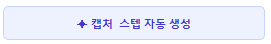
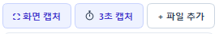
- 3초 캡처: 마우스를 올렸을 때만 열리는 드롭다운 메뉴나 마우스 오버 툴팁을 캡처할 수 있도록 3초 카운트다운 후 캡처 화면을 띄웁니다.
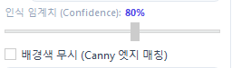
- 배경색 무시 (Canny 엣지): 색상 정보를 배제하고 외곽 윤곽선(Edge)만 대조하여 다크모드/라이트모드 변화에도 형태를 찾아냅니다.
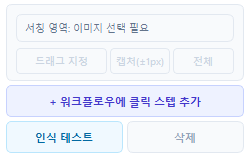
설정 후 [인식 테스트] 버튼을 누르면 현재 대상 화면에서 감지된 유사도 점수와 감지 좌표를 실시간으로 테스트합니다.
3대 워크플로우 뷰 및 시퀀스 편집 (중앙)
카드형 타임라인, 클래식 표 뷰, 플로우차트 도식도 3가지 모드로 작업 흐름을 자유롭게 설계합니다.
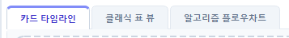
- 클래식 표 뷰: 수십 개의 스텝을 엑셀 행처럼 컴팩트하게 일괄 확인.
- 알고리즘 플로우차트: 조건 분기(IF 점프) 흐름을 노드 다이어그램으로 시각화.
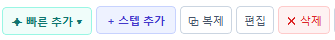
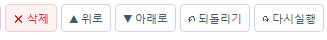
- 되돌리기 / 다시실행: 실수로 스텝을 삭제하거나 순서를 바꿨을 때 단축키(Ctrl+Z / Ctrl+Y)로 언제든 안전하게 복구.
실무 비즈니스 자동화 시나리오 예시
AutoPixel Studio를 활용하여 매일 반복되는 정형 데이터 처리 및 전산 업무를 자동화하는 합법적인 비즈니스 실전 활용 사례입니다.
사내 ERP 일괄 정산 다운로드
매일 오전 사내 ERP 시스템에 로그인하여 날짜 범위를 선택하고, 매출 정산 엑셀 파일을 백그라운드로 안전하게 다운로드받는 시퀀스.
전자상거래 송장 번호 일괄 대사
웹 브라우저 관리자 페이지에서 1,000건의 송장 번호를 순차적으로 열어 배송 상태를 확인하고 사내 시스템과 교차 검증하는 자동화.
서버 대시보드 헬스체크 모니터링
사내 웹 관제 대시보드에서 '장애(Red Alert)' 아이콘이 발생하는지 주기적으로 확인하고, 감지 시 담당자에게 알림을 전송하는 관제 루프.